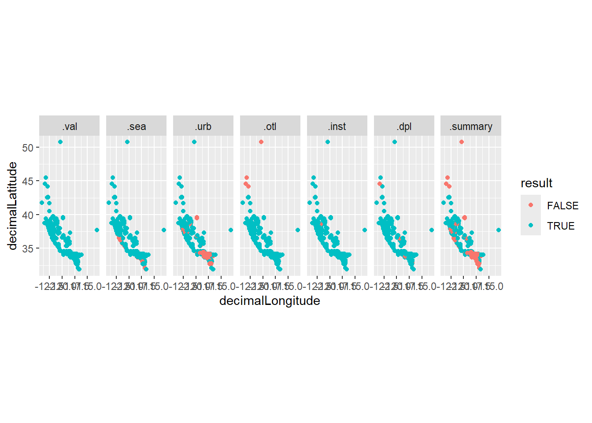
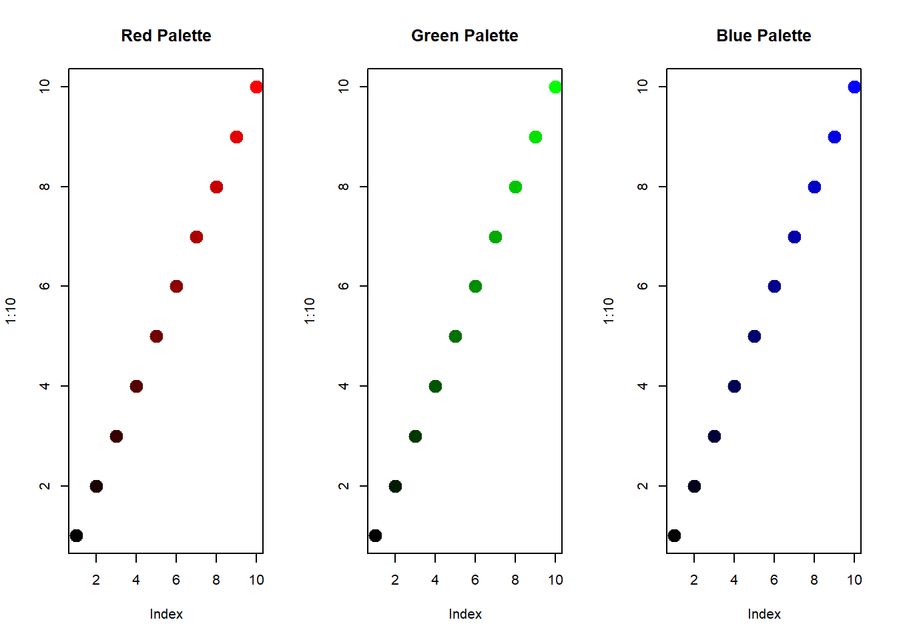

This tutorial will cover the basics of functional programming in R using the purrr package. In functional-style programming, we can break big problems into smaller pieces, and then solve each piece with a function. This is a powerful way to write code because it is more modular, easier to read, and less error-prone. This material is based off of Hadley Wicham’s Advanced R book, which is a great resource for learning more about functional programming in R (https://adv-r.hadley.nz/).
Let’s start by installing and loading the libraries we will need for this tutorial:
install_and_load <- function(package) {
if (!require(package, character.only = TRUE)) {
install.packages(package, dependencies = TRUE)
}
library(package, character.only = TRUE)
return()
}
packages <- c("purrr", "CoordinateCleaner", "dplyr", "tidyr", "rgbif", "ggplot2")
lapply(packages, install_and_load) # Will return NULL if successfulThe first concept we will cover is functionals. Functionals are functions that take a function as an input and return a vector (or list) as output.
Examples: lapply(), apply(),
tapply(), or purrr::map()
Functionals are commonly used as an alternative to for loops. For loops aren’t bad, but they are often “too flexible” (unclear what you are producing, potential side effects, not input/output oriented, etc.)
We will be using the purrr package to work with functionals. Purrr
provides a consistent and user friendly set of tools for working with
functions. The most basic purrr function is map(). This
function takes a vector or list as input and applies a function to each
element. The output is a list where each element is the result of
applying the function to the corresponding element of the input.
# here is a simple example of using map to print each element of a vector
map(c("hi", "hello", "yoohoo"), function(greeting) print(greeting))## [1] "hi"
## [1] "hello"
## [1] "yoohoo"## [[1]]
## [1] "hi"
##
## [[2]]
## [1] "hello"
##
## [[3]]
## [1] "yoohoo"# you can also use the shorthand ~ to define a function
map(c("hi", "hello", "yoohoo"), ~print(.x))## [1] "hi"
## [1] "hello"
## [1] "yoohoo"## [[1]]
## [1] "hi"
##
## [[2]]
## [1] "hello"
##
## [[3]]
## [1] "yoohoo"# or you can use an existing function, if there is only one argument
map(c("hi", "hello", "yoohoo"), print)## [1] "hi"
## [1] "hello"
## [1] "yoohoo"## [[1]]
## [1] "hi"
##
## [[2]]
## [1] "hello"
##
## [[3]]
## [1] "yoohoo"How is this different from a non-functional? Let’s say you wanted to simulate rolling a standard die (d6), a d10, and a magic 8 ball 10 times. You could use a for loop to do this:
die <- c(d6 = 6, d10 = 10, magic8ball = 20)
roll_results <- list()
for (i in 1:length(die)) {
roll_results[[i]] <- sample(1:die[i], 10, replace = TRUE)
}
names(roll_results) <- names(die)
roll_results## $d6
## [1] 1 4 5 2 4 3 6 3 3 2
##
## $d10
## [1] 2 8 3 6 7 4 5 5 2 3
##
## $magic8ball
## [1] 7 19 11 11 2 3 17 10 19 17Or you could define a function to roll a die given some number of sides and then use map to run that function 10 times:
die <- c(d6 = 6, d10 = 10, magic8ball = 20)
roll <- function(sides) sample(1:sides, 10, replace = TRUE)
roll_results <- map(die, roll)
roll_results## $d6
## [1] 6 2 4 6 3 5 2 3 3 4
##
## $d10
## [1] 6 2 7 9 10 8 3 4 6 9
##
## $magic8ball
## [1] 17 7 5 6 18 19 5 15 18 13Some benefits of this approach are: 1. It is easier to read and
understand. You define a function whose name tells you what it is doing
(roll()) and then apply that function to your list of die.
2. If there happened to be a bug in the roll() function, we
could fix it in one place and it would be fixed for all the rolls. 3.
You can easily modify the function by adding additional arguments, such
as the number of times to roll the die. 4. We won’t have any side
effects from the for loop, such as accidentally overwriting a variable.
5. The output preserves the names of the input vector, so we easily know
which die each set of rolls corresponds to without having to assign
names to the output (which can be risky in other contexts).
If you don’t like the tidyverse, you can also use
sapply() or lapply() to do the same thing:
sapply(1:10, function(x) roll(sides = 6))## [,1] [,2] [,3] [,4] [,5] [,6] [,7] [,8] [,9] [,10]
## [1,] 2 4 6 1 3 1 5 5 4 3
## [2,] 5 4 2 3 5 4 3 4 5 3
## [3,] 5 1 2 6 2 4 2 6 6 3
## [4,] 5 1 6 1 4 6 5 6 5 3
## [5,] 6 4 4 1 2 6 5 6 6 6
## [6,] 3 4 2 1 3 1 5 6 6 6
## [7,] 5 3 2 6 1 2 4 5 2 2
## [8,] 1 1 2 5 5 5 5 3 3 1
## [9,] 4 4 3 5 1 2 2 6 6 6
## [10,] 2 2 2 3 1 3 1 6 3 4Example 1: Using map() to pull occurrence data
for a list of species
Now let’s try applying map() to a more realistic
research problem. Imagine we have a list of species and we want to pull
occurrence data for each species from the GBIF database. We can use a
functional approach with the map() function to iterate over
each species and pull the data.
# First, let's define a list of species we want to pull occurrence data for
# Let's say we are working on three different projects and each project is focused on a different species
species <-
c(
Project01 = "Sceloporus occidentalis",
Project02 = "Phrynosoma blainvillii",
Project03 = "Plestiodon skiltonianus"
)
# Map over the species vector and use occ_search to pull occurrence data for each species
# ~ .x is a shorthand for function(x) x
# .progress = TRUE will show a progress bar (super handy for the impatient, like me)
occ_records <- map(species, ~occ_search(scientificName = .x, hasCoordinate = TRUE, limit = 1000), .progress = TRUE)## ■■■■■■■■■■■ 33% | ETA: 23s ■■■■■■■■■■■■■■■■■■■■■ 67% | ETA: 12s# This will provide a list where each element is the occurrence data for a species
# For example, let's look at the Project01 element
# Note that the names of the list correspond to the names of the species vector
occ_records[["Project01"]]## Records found [135878]
## Records returned [1000]
## No. unique hierarchies [1]
## No. media records [1000]
## No. facets [0]
## Args [hasCoordinate=TRUE, occurrenceStatus=PRESENT, limit=1000,
## offset=0, scientificName=Sceloporus occidentalis, fields=all]
## # A tibble: 1,000 × 95
## key scientificName decimalLatitude decimalLongitude issues
## <chr> <chr> <dbl> <dbl> <chr>
## 1 5006703295 Sceloporus occide… 32.6 -117. cdc,c…
## 2 5006770293 Sceloporus occide… 34.1 -118. cdc,c…
## 3 5006775023 Sceloporus occide… 34.1 -118. cdc,c…
## 4 5006830074 Sceloporus occide… 38.7 -122. cdc,c…
## 5 5006926024 Sceloporus occide… 34.1 -118. cdc,c…
## 6 5006950619 Sceloporus occide… 34.3 -119. cdc,c…
## 7 5007283698 Sceloporus occide… 35.3 -121. cdc,c…
## 8 5007296532 Sceloporus occide… 34.1 -118. cdc,c…
## 9 5007298566 Sceloporus occide… 32.7 -117. cdc,c…
## 10 5007433971 Sceloporus occide… 34.0 -118. cdc,c…
## # ℹ 990 more rows
## # ℹ 90 more variables: datasetKey <chr>, publishingOrgKey <chr>,
## # installationKey <chr>, hostingOrganizationKey <chr>,
## # publishingCountry <chr>, protocol <chr>, lastCrawled <chr>,
## # lastParsed <chr>, crawlId <int>, projectId <chr>,
## # basisOfRecord <chr>, occurrenceStatus <chr>, taxonKey <int>,
## # kingdomKey <int>, phylumKey <int>, classKey <int>, …# This element is an rgbif object
class(occ_records[["Project01"]])## [1] "gbif"# And therefore has several different elements itself
names(occ_records[["Project01"]])## [1] "meta" "hierarchy" "data" "media" "facets"# What we care about is the "data" element, and we can use map to pull just that element out
occ_data <- map(occ_records, "data")
# We can also bind the rows of our list together to make a dataframe
# The .id argument will add a column with the name of the list element, in this case our original project ID (this is super handy for keeping track of where things come from in a list)
occ_df <- bind_rows(occ_data, .id = "project")
head(occ_df)## # A tibble: 6 × 96
## project key scientificName decimalLatitude decimalLongitude issues
## <chr> <chr> <chr> <dbl> <dbl> <chr>
## 1 Project01 5006… Sceloporus oc… 32.6 -117. cdc,c…
## 2 Project01 5006… Sceloporus oc… 34.1 -118. cdc,c…
## 3 Project01 5006… Sceloporus oc… 34.1 -118. cdc,c…
## 4 Project01 5006… Sceloporus oc… 38.7 -122. cdc,c…
## 5 Project01 5006… Sceloporus oc… 34.1 -118. cdc,c…
## 6 Project01 5006… Sceloporus oc… 34.3 -119. cdc,c…
## # ℹ 90 more variables: datasetKey <chr>, publishingOrgKey <chr>,
## # installationKey <chr>, hostingOrganizationKey <chr>,
## # publishingCountry <chr>, protocol <chr>, lastCrawled <chr>,
## # lastParsed <chr>, crawlId <int>, projectId <chr>,
## # basisOfRecord <chr>, occurrenceStatus <chr>, taxonKey <int>,
## # kingdomKey <int>, phylumKey <int>, classKey <int>, familyKey <int>,
## # genusKey <int>, speciesKey <int>, acceptedTaxonKey <int>, …Example 2: the wonders of pmap()
Now let’s say you want to download occurrence records for specimens
from the MVZ, LACM, and CAS museums. You could do a nested for-loop to
iterate over each species and each museum…or you could use
pmap(), a function which will allow us to iterate over all
of our combinations at once.
museums <- c("MVZ", "LACM", "CAS")
# To make our code a little easier to read and put the "function" in functional, let's first make a function that will pull occurrence data for a species from a museum
occ_search_museum <- function(species, museum) {
occ_search(
scientificName = species,
hasCoordinate = TRUE,
limit = 1000,
basisOfRecord = "PRESERVED_SPECIMEN",
institutionCode = museum
)$data
}
# Now, lets create grid of all the combinations of species and museums
# This will be a dataframe with two columns, one for species and one for museum with all possible combinations of the two
species_museum <- expand_grid(speciesID = species, museumID = museums)
print(species_museum)## # A tibble: 9 × 2
## speciesID museumID
## <chr> <chr>
## 1 Sceloporus occidentalis MVZ
## 2 Sceloporus occidentalis LACM
## 3 Sceloporus occidentalis CAS
## 4 Phrynosoma blainvillii MVZ
## 5 Phrynosoma blainvillii LACM
## 6 Phrynosoma blainvillii CAS
## 7 Plestiodon skiltonianus MVZ
## 8 Plestiodon skiltonianus LACM
## 9 Plestiodon skiltonianus CAS# Instead of map() we will now use pmap(), which will take each row of species_museum to fill in the arguments of occ_search_museum()
# Notice that we use \(x, y) to define the arguments of the function, this is the same thing as ~function(x, y), but in a more concise format
museum_records <-
pmap(species_museum, \(speciesID, museumID) occ_search_museum(species = speciesID, museum = museumID), .progress = TRUE) %>%
bind_rows()## ■■■■ 11% | ETA: 2m ■■■■■■■■ 22% | ETA: 2m ■■■■■■■■■■■ 33% | ETA: 1m
## ■■■■■■■■■■■■■■ 44% | ETA: 1m ■■■■■■■■■■■■■■■■■■ 56% | ETA: 33s
## ■■■■■■■■■■■■■■■■■■■■■ 67% | ETA: 23s ■■■■■■■■■■■■■■■■■■■■■■■■ 78% |
## ETA: 17s ■■■■■■■■■■■■■■■■■■■■■■■■■■■■ 89% | ETA: 8s# We could have also used pmap(species_museum, occ_search_museum) since our arguments are in order, but this way is a little more explicit and less prone to bugsAnother key concept in functional programming is functional factories. Functional factories are functions that return other functions. This can be useful if you have a lot of different functions that all need to use the same arguments.
Example 3: creating a museum factory
Below we use a factory function to create functions that will pull occurrence data from a specific museum.
museum_factory <- function(museum){
occ_search_museum <- function(species) {
result <- occ_search(
scientificName = species,
hasCoordinate = TRUE,
limit = 1000,
basisOfRecord = "PRESERVED_SPECIMEN",
institutionCode = museum
)$data
}
}
# We can use our factory to create functions that will pull occurrence data for a species from a specific museum
search_mvz <- museum_factory("MVZ")
search_lacm <- museum_factory("LACM")
search_cas <- museum_factory("CAS")
# We can use our new functions to pull occurrence data from a specific museum
search_mvz("Crotalus cerastes")Our final functional programming technique is the use of function operators. Function operators are functions that take other functions as input and return a new function as output. In other words, they are just function factories that take a function as input. Function operators can be particularly useful for error handling, as you will see in the next example.
Example 4: catching errors with safely() and possibly()
Have you ever been runnning a super long loop and then it fails 90%
of the way through? Argh! Wouldn’t it be better if it stored the results
of everything that worked and then told you what went wrong? Well, that
is what safely() does! safely() will take in
your function and return a new function that will return a list with the
result of the function if it works or an error message if the function
fails.
# Let's imagine we have an invalid species name in our list
species <-
c(
Project01 = "Phrynosoma blainvillii",
Project02 = "Plestiodon skiltonianus",
Project03 = "Bogus bogus"
)
# We won't initially get an error from our search function because the function will just return a NULL
mvz_specimens <- map(species, search_mvz, .progress = TRUE)## ■■■■■■■■■■■■■■■■■■■■■ 67% | ETA: 7s# But if we try do stuff with the list, such as pull coordinates out, we will get an error
pull_coords <- function(data){
data <- dplyr::select(data, species, decimalLatitude, decimalLongitude)
return(data)
}
# map(mvz_specimens, pull_coords) # this will fail!
# We can use safely() to create a new function that will catch any errors
safe_function <- safely(pull_coords)
coords <- map(mvz_specimens, safe_function)
# If we look at the output, we will see that the output is a list with two elements, result and error
coords[["Project01"]]## $result
## # A tibble: 1 × 3
## species decimalLatitude decimalLongitude
## <chr> <dbl> <dbl>
## 1 Phrynosoma blainvillii 36.7 -122.
##
## $error
## NULL# If the function was successful , the result element will contain the output of the function and the error element will be NULL
coords[["Project01"]]$result## # A tibble: 1 × 3
## species decimalLatitude decimalLongitude
## <chr> <dbl> <dbl>
## 1 Phrynosoma blainvillii 36.7 -122.coords[["Project01"]]$error## NULL# If the function failed, the result element will be NULL and the error element will contain the error message
coords[["Project03"]]$result## NULLcoords[["Project03"]]$error## <simpleError in UseMethod("select"): no applicable method for 'select' applied to an object of class "NULL"># You can use map() to pull out the error messages
map(coords, "error")## $Project01
## NULL
##
## $Project02
## NULL
##
## $Project03
## <simpleError in UseMethod("select"): no applicable method for 'select' applied to an object of class "NULL"># You can also use map to pull out the elements with no errors and compact() to remove any NULL elements
coords <- map(coords, "result") %>% compact()Another handy function operator is possibly(). This will
return a list with the result or NULL if the function failed. This can
be useful if you know that some of your functions will fail, but you
just want to ignore them and keep going and then drop them later.
# Possible_function will return NULL if the function fails
# You can change the otherwise argument to return something else (e.g., NA or "No result"), if you want
possible_function <- possibly(pull_coords, otherwise = NULL)
# Now we can use possible_function() to pull out the coordinates and ignore any errors
coords <- map(mvz_specimens, possible_function)
# And then we can use compact() to remove any NULL elements
coords <- compact(coords)Now it’s time for you to be functional! The following code uses the
CoordinateCleaner package to clean up some occurrence data using the
clean_coordinates()function; this function takes in a
dataframe of occurrence data and a list of tests to run. The output is a
dataframe with a column for each test that was run and a flag for each
record that failed that test. Rewrite the code in a functional
programming style using the purrr functions we have learned about:
library(CoordinateCleaner)
clean_project1 <- clean_coordinates(occ_data[["Project01"]], tests = c("institutions", "seas", "duplicates", "outliers", "urban"))## Testing coordinate validity## Flagged 0 records.## Testing sea coordinates## Reading layer `ne_50m_land' from data source
## `C:\Users\Anusha\AppData\Local\Temp\Rtmp8WGPim\ne_50m_land.shp'
## using driver `ESRI Shapefile'
## Simple feature collection with 1420 features and 3 fields
## Geometry type: MULTIPOLYGON
## Dimension: XY
## Bounding box: xmin: -180 ymin: -89.99893 xmax: 180 ymax: 83.59961
## Geodetic CRS: WGS 84## Flagged 29 records.## Testing urban areas## Downloading urban areas via rnaturalearth## Reading layer `ne_50m_urban_areas' from data source
## `C:\Users\Anusha\AppData\Local\Temp\Rtmp8WGPim\ne_50m_urban_areas.shp'
## using driver `ESRI Shapefile'
## Simple feature collection with 2143 features and 4 fields
## Geometry type: POLYGON
## Dimension: XY
## Bounding box: xmin: -157.984 ymin: -46.26844 xmax: 174.97 ymax: 69.35127
## Geodetic CRS: WGS 84## Flagged 590 records.## Testing geographic outliers## Flagged 6 records.## Testing biodiversity institutions## Flagged 27 records.## Testing duplicates## Flagged 24 records.## Flagged 631 of 1000 records, EQ = 0.63.clean_project2 <- clean_coordinates(occ_data[["Project02"]], tests = c("institutions", "outliers", "seas", "duplicates", "urban"))## Testing coordinate validity## Flagged 0 records.## Testing sea coordinates## Reading layer `ne_50m_land' from data source
## `C:\Users\Anusha\AppData\Local\Temp\Rtmp8WGPim\ne_50m_land.shp'
## using driver `ESRI Shapefile'
## Simple feature collection with 1420 features and 3 fields
## Geometry type: MULTIPOLYGON
## Dimension: XY
## Bounding box: xmin: -180 ymin: -89.99893 xmax: 180 ymax: 83.59961
## Geodetic CRS: WGS 84## Flagged 33 records.## Testing urban areas## Downloading urban areas via rnaturalearth## Reading layer `ne_50m_urban_areas' from data source
## `C:\Users\Anusha\AppData\Local\Temp\Rtmp8WGPim\ne_50m_urban_areas.shp'
## using driver `ESRI Shapefile'
## Simple feature collection with 2143 features and 4 fields
## Geometry type: POLYGON
## Dimension: XY
## Bounding box: xmin: -157.984 ymin: -46.26844 xmax: 174.97 ymax: 69.35127
## Geodetic CRS: WGS 84## Flagged 127 records.## Testing geographic outliers## Flagged 0 records.## Testing biodiversity institutions## Flagged 1 records.## Testing duplicates## Flagged 7 records.## Flagged 167 of 1000 records, EQ = 0.17.clean_project3 <- clean_coordinates(occ_data[["Project03"]], tests = c("institutions", "outliers", "seas", "duplicates", "urban"))## Testing coordinate validity## Flagged 0 records.## Testing sea coordinates## Reading layer `ne_50m_land' from data source
## `C:\Users\Anusha\AppData\Local\Temp\Rtmp8WGPim\ne_50m_land.shp'
## using driver `ESRI Shapefile'
## Simple feature collection with 1420 features and 3 fields
## Geometry type: MULTIPOLYGON
## Dimension: XY
## Bounding box: xmin: -180 ymin: -89.99893 xmax: 180 ymax: 83.59961
## Geodetic CRS: WGS 84## Flagged 44 records.## Testing urban areas## Downloading urban areas via rnaturalearth## Reading layer `ne_50m_urban_areas' from data source
## `C:\Users\Anusha\AppData\Local\Temp\Rtmp8WGPim\ne_50m_urban_areas.shp'
## using driver `ESRI Shapefile'
## Simple feature collection with 2143 features and 4 fields
## Geometry type: POLYGON
## Dimension: XY
## Bounding box: xmin: -157.984 ymin: -46.26844 xmax: 174.97 ymax: 69.35127
## Geodetic CRS: WGS 84## Flagged 223 records.## Testing geographic outliers## Flagged 0 records.## Testing biodiversity institutions## Flagged 1 records.## Testing duplicates## Flagged 12 records.## Flagged 280 of 1000 records, EQ = 0.28.clean_list <- list(Project01 = clean_project1, Project02 = clean_project2, Project03 = clean_project3)The tests argument specifies which tests to run. The tests specified here are: - institutions tests a radius around known biodiversity institutions from institutions. The radius is inst_rad. - outliers tests each species for outlier records. Depending on the outliers_mtp and outliers.td arguments either flags records that are a minimum distance away from all other records of this species (outliers_td) or records that are outside a multiple of the interquartile range of minimum distances to the next neighbour of this species (outliers_mtp). Three different methods are available for the outlier test: “If “outlier” a boxplot method is used and records are flagged as outliers if their mean distance to all other records of the same species is larger than mltpl * the interquartile range of the mean distance of all records of this species. If “mad” the median absolute deviation is used. In this case a record is flagged as outlier, if the mean distance to all other records of the same species is larger than the median of the mean distance of all points plus/minus the mad of the mean distances of all records of the species * mltpl. If “distance” records are flagged as outliers, if the minimum distance to the next record of the species is > tdi. - seas tests if coordinates fall into the ocean. - validity checks if coordinates correspond to a lat/lon coordinate reference system. This test is always on, since all records need to pass for any other test to run. For a list of all available tests see the function documentation with ?clean_coordinates.
# Write your code hereBelow is code to plot the results of the tests for project 1. The .summary column contains the overall result of the tests. The other columns contain the results of the individual tests. If the test failed, the value in the column will be FALSE and if the test passed, the value will be TRUE. If any test failed, the value in the .summary column will be FALSE.
problems <-
clean_project1 %>%
pivot_longer(starts_with("."), names_to = "test", values_to = "result") %>%
mutate(test = factor(test, levels = c(setdiff(unique(test), ".summary"), ".summary")))
ggplot(problems) +
geom_point(aes(x = decimalLongitude, y = decimalLatitude, color = result)) +
facet_wrap(~test, nrow = 1) +
coord_quickmap()
Write a function that will plot the results of the tests for a given project. The function should take a cleaned dataframe as input and returned a ggplot object.
# Write your code hereAfter reviewing your results, you want to exclude any points that are
in the ocean, but ignore all of the other flags. Use purrr to filter out
any points that are flagged as “seas” in the clean_list
object.
# Write your code hereWe have mentioned how one of the benefits of functional programming is that you can avoid side effects; side effects are effects that you don’t intend to happen when you run your code. For example, if you have a for loop that changes a variable you didn’t mean too, that is a side effect. Using a functional approach can help you avoid side effects by explicitly defining the input and output of your functions.
However, the environment inside a function is not completely independent from that outside the function. While you can’t modify a variable outside of a function from inside a function, you can still access variables from outside the function inside a function. This means that if you forget to pass an argument to a function, R will look for that variable outside your function and use it. This can lead to unexpected results and bugs that are hard to track down.
For example:
# a is defined outside the function
a <- 1
# foo is a function that takes an argument b and overwrites a with the sum of a and b
uhoh <- function(b) {
a <- a + b
return(a)
}
# Even though a is not passed as an argument to the function, R will look for it outside the function and use it, which is why the function will work and return 3
uhoh(b = 2)## [1] 3# note that a will still not be modified outside the function even though we used it and overwrote it inside the function
a## [1] 1Below is a more complex example of how this can lead to unexpected results. Can you figure out what is happening?
# Let's say you wanted to create a function to create a bunch of different color palettes, all starting with black and ending with a specified color:
create_palettes <- function(color) {
colorRampPalette(c("black", color))(10)
}
color <- c("red", "green", "blue")
palettes <- map(color, create_palettes)
par(mfrow = c(1,3))
plot(1:10, col = palettes[[1]], pch = 19, cex = 2, main = "Red Palette")
plot(1:10, col = palettes[[2]], pch = 19, cex = 2, main = "Green Palette")
plot(1:10, col = palettes[[3]], pch = 19, cex = 2, main = "Blue Palette")
# Now, let's say you wanted to create a Mad Libs story generator using a function:
create_madlib <- function(adjective1, adjective2, noun, verb, food) {
writeLines(paste0(
"In the heart of a ", adjective1, " rainforest, scientists discovered a new species named the ",
adjective2, " ", noun, " Lizard. This lizard has ", color, " skin, a tail that can ", verb,
" and a diet of ", food, ". What an incredible day for science!"
))
}
# Replace the placeholders with your own words
create_madlib(adjective1 = "stinky", adjective2 = "rainbow", noun = "egg", verb = "tango", food = "marshmallows")## In the heart of a stinky rainforest, scientists discovered a new species named the rainbow egg Lizard. This lizard has red skin, a tail that can tango and a diet of marshmallows. What an incredible day for science!
## In the heart of a stinky rainforest, scientists discovered a new species named the rainbow egg Lizard. This lizard has green skin, a tail that can tango and a diet of marshmallows. What an incredible day for science!
## In the heart of a stinky rainforest, scientists discovered a new species named the rainbow egg Lizard. This lizard has blue skin, a tail that can tango and a diet of marshmallows. What an incredible day for science!Why are you ending up with the madlibs story repeated three times?